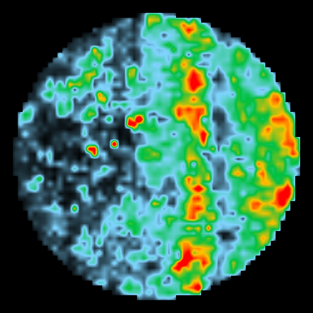

DSC Neuro Perfusion
Demonstration site · NeuroradiologyAnalysis 2026-11-22 14:05
NeuroMR-PRO 1.0.0-dev
NeuroMR-PRO 1.0.0-dev
- Patient
- PHANTOM^SYNTHETIC
- Patient ID
- NMR-PHANTOM-001
- Sex · birth date
- O · 1970-01-01
- Accession
- PHANTOM0001
- Study date
- 2026-01-01
- Modality
- MR · 3.0 T
- Referring
- —
- Reported by
- dr.neuro
Key images · slice 3/4


![relCBF [ml/100 g/min] · Stroke 0–80](../assets/img/dsc_relcbf.png)
Region parameters
| ROI | relCBV [ml/100 g] | relCBF [ml/100 g/min] | MTT [s] | TTP [s] | T0 [s] |
|---|---|---|---|---|---|
| ROI1 | 1.48 | 14.0 | 6.58 | 29.4 | 23.1 |
| ROI1-mirror | 3.42 | 42.5 | 4.40 | 16.8 | 14.7 |
| ROI2 | 3.83 | 37.8 | 5.55 | 16.8 | 14.7 |
| ROI1 / mirror | 0.43 | 0.33 | 1.50 |
Concentration-time curves
Method
Model-free analysis of ΔR2*(t) from DSC perf SNR50 (60 dynamics, TR 2.1 s, TE 30 ms); automatic AIF; no spatial or temporal smoothing. Perfusion values depend on acquisition and method; compare follow-ups with the same method.
PHANTOM^SYNTHETIC · NMR-PHANTOM-001 · 2026-01-01Default settings · page 1 of 1